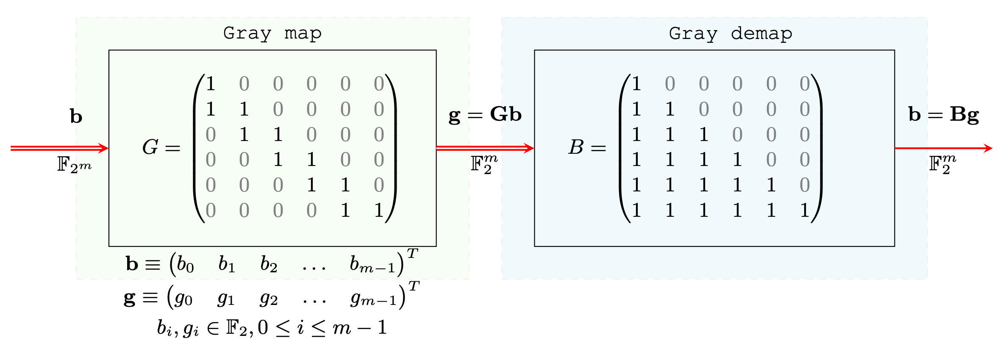
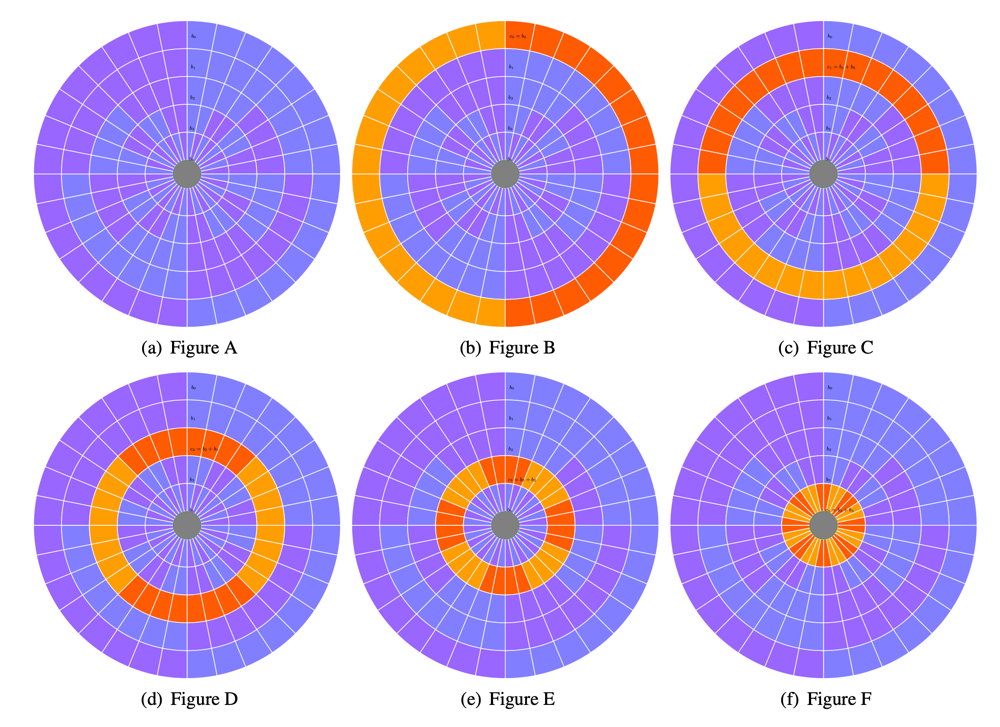
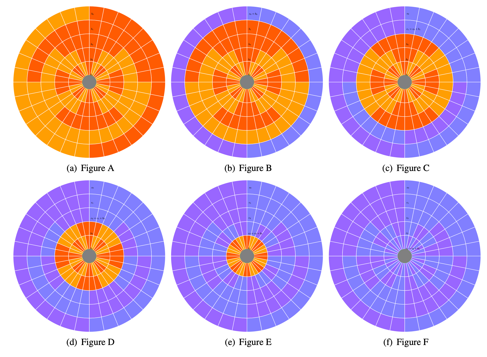

Algebraic framework of Gray Codes
The classical algorithmic procedure of encoding and decoding are as follows:
Encoding
q-ry digits $d$ to gray digits $g$ conversion.
$g_{i} = \begin{cases} d_{i} , & \text{if} \mod\left(\displaystyle{\sum_{j=1}^{i-1}{g_{j}}},2\right)=0 \\ q-1-d_{i} , & \text{if} \mod\left(\displaystyle \sum_{j=1}^{i-1}{g_{j}},2\right)=1 \end{cases}$
and $g_{1} = d_{1}$.
Decoding
$d_{i} = \begin{cases} g_{i} , & \text{if} \mod\left(\displaystyle{\sum_{j=1}^{i-1}{g_{j}}},2\right)=0 \\ q-1-g_{i} , & \text{if} \mod\left(\displaystyle \sum_{j=1}^{i-1}{g_{j}},2\right)=1 \end{cases}$
and $d_{1} = g_{1}$.
Linear Algebraic Formulation (N.Rethnakar 2020)
Example of generator matrix $G$ for binary to gray mapping is given by,
\[G=\begin{pmatrix} 1 & {\color{gray}0} & {\color{gray}0} & {\color{gray}0} & {\color{gray}0} & {\color{gray}0} \\ 1 & 1 & {\color{gray}0} & {\color{gray}0} & {\color{gray}0} & {\color{gray}0} \\ {\color{gray}0} & 1 & 1 & {\color{gray}0} & {\color{gray}0} & {\color{gray}0} \\ {\color{gray}0} & {\color{gray}0} & 1 & 1 & {\color{gray}0} & {\color{gray}0} \\ {\color{gray}0} & {\color{gray}0} & {\color{gray}0} & 1 & 1 & {\color{gray}0} \\ {\color{gray}0} & {\color{gray}0} & {\color{gray}0} & {\color{gray}0} & 1 & 1 \end{pmatrix}\]
The decoding matrix $B=G^{-1}$ is given by,
\[ B=\begin{pmatrix} 1 & {\color{gray}0} & {\color{gray}0} & {\color{gray}0} & {\color{gray}0} & {\color{gray}0} \\ 1 & 1 & {\color{gray}0} & {\color{gray}0} & {\color{gray}0} & {\color{gray}0} \\ 1 & 1 & 1 & {\color{gray}0} & {\color{gray}0} & {\color{gray}0} \\ 1 & 1 & 1 & 1 & {\color{gray}0} & {\color{gray}0} \\ 1 & 1 & 1 & 1 & 1 & {\color{gray}0} \\ 1 & 1 & 1 & 1 & 1 & 1 \end{pmatrix}\]
Illustration of Binary Code

Generalized $q$-ry Gray Code
\[G=\begin{pmatrix} 1 & {\color{gray}0} & {\color{gray}0} & {\color{gray}0} & {\color{gray}0} & {\color{gray}0} \\ q-1 & 1 & {\color{gray}0} & {\color{gray}0} & {\color{gray}0} & {\color{gray}0} \\ {\color{gray}0} & q-1 & 1 & {\color{gray}0} & {\color{gray}0} & {\color{gray}0} \\ {\color{gray}0} & {\color{gray}0} & q-1 & 1 & {\color{gray}0} & {\color{gray}0} \\ {\color{gray}0} & {\color{gray}0} & {\color{gray}0} & q-1 & 1 & {\color{gray}0} \\ {\color{gray}0} & {\color{gray}0} & {\color{gray}0} & {\color{gray}0} & q-1 & 1 \end{pmatrix} \equiv \begin{pmatrix} 1 & {\color{gray}0} & {\color{gray}0} & {\color{gray}0} & {\color{gray}0} & {\color{gray}0} \\ -1 & 1 & {\color{gray}0} & {\color{gray}0} & {\color{gray}0} & {\color{gray}0} \\ {\color{gray}0} & -1 & 1 & {\color{gray}0} & {\color{gray}0} & {\color{gray}0} \\ {\color{gray}0} & {\color{gray}0} & -1 & 1 & {\color{gray}0} & {\color{gray}0} \\ {\color{gray}0} & {\color{gray}0} & {\color{gray}0} & -1 & 1 & {\color{gray}0} \\ {\color{gray}0} & {\color{gray}0} & {\color{gray}0} & {\color{gray}0} & -1 & 1 \end{pmatrix}_{\mathbb{F}_{q}}\]
Gray Encoding as Differentiation
Encoding matrix operation act as a forward discrete differentiation operation in $\mathbb{F}_{q}$.

Gray Decoding as Integrator
